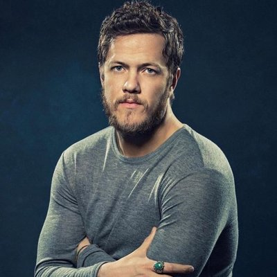
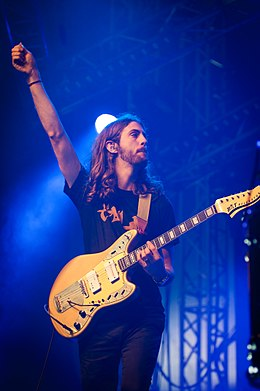
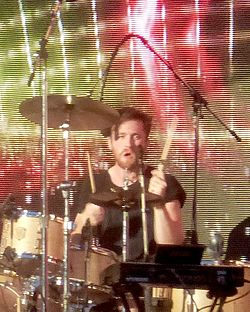
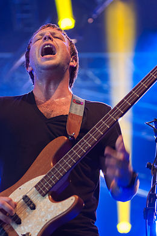
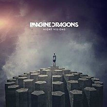
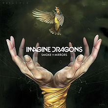
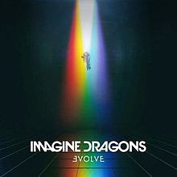

História da Banda(Fonte:Wikipedia )

Os primeiros trabalhos
Logo depois de formada, em 2008, a banda lançou dois EPs intitulados Imagine Dragons EP[4] e Hell and Silence EP,[5] em 2010, ambos gravados na Battle Born Studios. Eles voltaram ao estúdio em 2011.[6][7][8] Outro EP, It's Time, foi feito antes de eles assinarem um contrato com uma gravadora.
Antes do sucesso
Em 2008, o vocalista Dan Reynolds conheceu o baterista Andrew Tolman na Brigham Young University, onde ambos estudavam e decidiram formar uma banda. Eles chamaram então o guitarrista Daniel Wayne Sermon “Wing”, que havia se formado recentemente na Berklee College of Music. Tolman mais tarde recrutou sua esposa, Brittany Tolman, para ser a segunda voz e cantar em certas canções. Wayne Sermon então chamou um outro estudante de música da Berklee, o baixista Ben McKee para se juntar a banda e completar o lineup. Os membros passaram a viver juntos em Las Vegas, a cidade natal de Dan Reynolds, onde a banda gravou e lançou seus três primeiros EPs. Os dois primeiros, intitulados Imagine Dragons EP e Hell and Silence EP, foram lançados em 2010 e gravados na Battle Born Studios, em Las Vegas, NV. Em 2011 eles lançaram o EP It's Time, e logo depois assinaram um contrato de gravação com a Interscope Records.
Eles tiveram sua primeira grande aparição quando o vocalista da banda Train adoeceu pouco antes do Bite of Las Vegas Festival de 2010. A banda Imagine Dragons então foi chamada para preencher o lineup, e se apresentou para uma multidão de mais de 26.000 pessoas. Várias premiações locais, incluindo “Melhor CD de 2011″ (Las Vegas SEVEN Magazine), “Best local Indie Band 2010″ ( Las Vegas Weekly ),“Mais Las Vegas ‘Must See Live Act” ( Las Vegas CityLife ), Vegas Música Summit Headliner 2010, e outros mais, levaram a banda à uma trajetória positiva. Em novembro de 2011 eles assinaram com a Interscope Records e começaram a trabalhar com o já vencedor do Grammy, o produtor Alex da Kid . Os primeiros membros Andrew Tolman e Brittany Tolman deixaram a banda em julho de 2011 e foram substituídos pelo atual baterista Daniel Platzman e por Theresa Flaminio (que deixou a banda em janeiro de 2012).
Integrantes
| Foto | Nome | Data de Nascimento | Instrumento |
|  | Dan Reynolds | 14/07/1987 | Guitarra, Piano, Percussão, Baixo |
|  | Daniel Wayne | 15/06/1987 | Guitarra, Piano |
|  | Daniel Platzman | 28/08/1986 | Bateria |
|  | Ben McKee | 07/04/1985 | Baixo, Guitarra |
Discografia
| Capa | Nome | Ano Lançamento |
|  | Night Visions | 2012 |
|  | Smoke and Mirrors | 2015 |
|  | Evolve | 2017 |